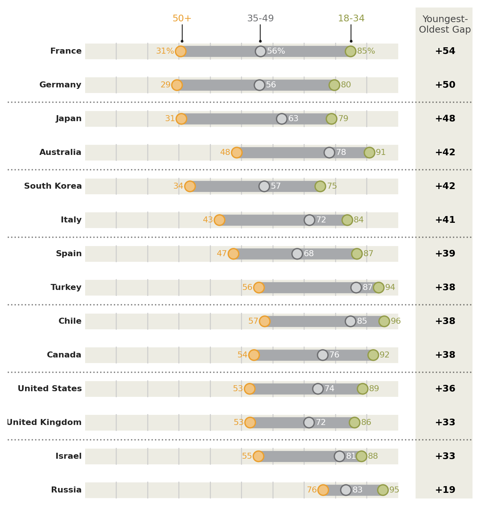
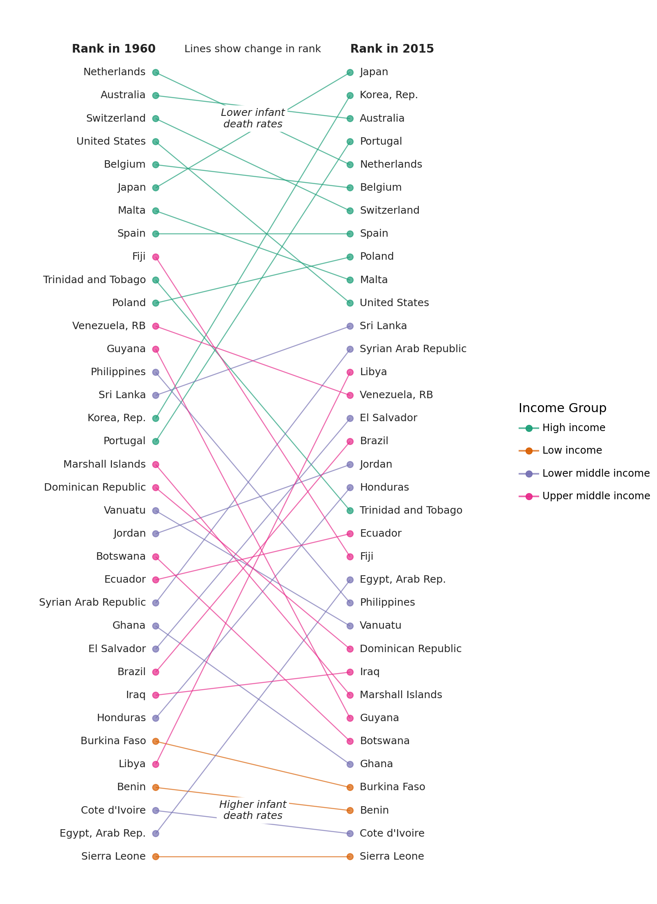

# NOTE: This notebook uses the polars package
import pandas as pd
import pandas.api.types as pdtypes
import numpy as np
from plotnine import *
import polars as pl
from polars import col
geom_segment(
mapping=None,
data=None,
*,
stat="identity",
position="identity",
na_rm=False,
inherit_aes=True,
show_legend=None,
raster=False,
lineend="butt",
arrow=None,
**kwargs
)Line segments
Parameters
mapping : aes = None-
Aesthetic mappings created with aes. If specified and
inherit_aes=True, it is combined with the default mapping for the plot. You must supply mapping if there is no plot mapping.Aesthetic Default value x xend y yend alpha 1color 'black'group linetype 'solid'size 0.5The bold aesthetics are required.
data : DataFrame = None-
The data to be displayed in this layer. If
None, the data from from theggplot()call is used. If specified, it overrides the data from theggplot()call. stat : str | stat = "identity"-
The statistical transformation to use on the data for this layer. If it is a string, it must be the registered and known to Plotnine.
position : str | position = "identity"-
Position adjustment. If it is a string, it must be registered and known to Plotnine.
na_rm : bool = False-
If
False, removes missing values with a warning. IfTruesilently removes missing values. inherit_aes : bool = True-
If
False, overrides the default aesthetics. show_legend : bool | dict = None-
Whether this layer should be included in the legends.
Nonethe default, includes any aesthetics that are mapped. If abool,Falsenever includes andTruealways includes. Adictcan be used to exclude specific aesthetis of the layer from showing in the legend. e.gshow_legend={'color': False}, any other aesthetic are included by default. raster : bool = False-
If
True, draw onto this layer a raster (bitmap) object even ifthe final image is in vector format. lineend : Literal["butt", "round", "projecting"] = "butt"-
Line end style. This option is applied for solid linetypes.
arrow : arrow = None-
Arrow specification. Default is no arrow.
**kwargs : Any = {}-
Aesthetics or parameters used by the
stat.
See Also
plotnine.geoms.geom_path.arrow : for adding arrowhead(s) to segments.
Examples
Ranges of Similar Variables
Comparing the point to point difference of many similar variables
Read the data.
Source: Pew Research Global Attitudes Spring 2015
!head -n 20 'data/survey-social-media.csv'PSRAID,COUNTRY,Q145,Q146,Q70,Q74
100000,Ethiopia,Female,35,No,
100001,Ethiopia,Female,25,No,
100002,Ethiopia,Male,40,Don’t know,
100003,Ethiopia,Female,30,Don’t know,
100004,Ethiopia,Male,22,No,
100005,Ethiopia,Male,40,No,
100006,Ethiopia,Female,20,No,
100007,Ethiopia,Female,18,No,No
100008,Ethiopia,Male,50,No,
100009,Ethiopia,Male,35,No,
100010,Ethiopia,Female,20,No,
100011,Ethiopia,Female,30,Don’t know,
100012,Ethiopia,Male,60,No,
100013,Ethiopia,Male,18,No,
100014,Ethiopia,Male,40,No,
100015,Ethiopia,Male,28,Don’t know,
100016,Ethiopia,Female,55,Don’t know,
100017,Ethiopia,Male,30,Don’t know,
100018,Ethiopia,Female,22,No, columns = dict(
COUNTRY='country',
Q145='gender',
Q146='age',
Q70='use_internet',
Q74='use_social_media'
)
data = pl.scan_csv(
'data/survey-social-media.csv',
dtypes=dict(Q146=pl.Utf8),
).rename(
columns
).select([
'country',
'age',
'use_social_media'
]).collect()
data.sample(10, seed=123)
shape: (10, 3)
| country | age | use_social_media |
|---|---|---|
| str | str | str |
| "Venezuela" | "47" | "Yes" |
| "Israel" | "63" | " " |
| "Germany" | "60" | "Yes" |
| "France" | "60" | "No" |
| "Philippines" | "25" | " " |
| "China" | "40" | " " |
| "Senegal" | "20" | " " |
| "Argentina" | "47" | "Yes" |
| "India" | "53" | "No" |
| "Jordan" | "24" | " " |
Create age groups for users of social media
yes_no = ['Yes', 'No']
valid_age_groups = ['18-34', '35-49', '50+']
rdata = data.with_columns([
pl
.when(col('age') <= '34').then('18-34')
.when(col('age') <= '49').then('35-49')
.when(col('age') < '98').then('50+')
.otherwise("")
.alias('age_group'),
pl.count().over("country").alias('country_count')
]).filter(
col('age_group').is_in(valid_age_groups) &
col('use_social_media').is_in(yes_no)
).groupby(['country', 'age_group']).agg([
# social media use percentage
((col('use_social_media') == 'Yes').sum() * 100 / pl.count()).alias('sm_use_percent'),
# social media question response rate
(col('use_social_media').is_in(yes_no).sum() * 100 / col('country_count').first()).alias('smq_response_rate')
]).sort(['country', 'age_group'])
rdata.head()
shape: (5, 4)
| country | age_group | sm_use_percent | smq_response_rate |
|---|---|---|---|
| str | str | f64 | f64 |
| "Argentina" | "18-34" | 90.883191 | 35.1 |
| "Argentina" | "35-49" | 84.40367 | 21.8 |
| "Argentina" | "50+" | 67.333333 | 15.0 |
| "Australia" | "18-34" | 90.862944 | 19.621514 |
| "Australia" | "35-49" | 78.04878 | 20.418327 |
Top 14 countries by response rate to the social media question.
def col_format(name, fmt):
# Format useing python formating
# for more control over
return col(name).apply(lambda x: fmt.format(x=x))
def float_to_str_round(name):
return col_format(name, '{x:.0f}')
n = 14
top = rdata.groupby('country').agg([
col('smq_response_rate').sum().alias('r')
]).sort('r', reverse=True).head(n)
top_countries = top['country']
expr = float_to_str_round('sm_use_percent')
expr_pct = expr + '%'
point_data = rdata.filter(
col('country').is_in(top_countries)
).with_column(
pl.when(col('country') == 'France').then(expr_pct).otherwise(expr).alias('sm_use_percent_str')
)
point_data.head()
shape: (5, 5)
| country | age_group | sm_use_percent | smq_response_rate | sm_use_percent_str |
|---|---|---|---|---|
| str | str | f64 | f64 | str |
| "Australia" | "18-34" | 90.862944 | 19.621514 | "91" |
| "Australia" | "35-49" | 78.04878 | 20.418327 | "78" |
| "Australia" | "50+" | 48.479087 | 52.390438 | "48" |
| "Canada" | "18-34" | 92.063492 | 25.099602 | "92" |
| "Canada" | "35-49" | 75.925926 | 21.513944 | "76" |
segment_data = point_data.groupby('country').agg([
col('sm_use_percent').min().alias('min'),
col('sm_use_percent').max().alias('max'),
]).with_column(
(col('max') - col('min')).alias('gap')
).sort(
'gap',
).with_columns([
float_to_str_round('min').alias('min_str'),
float_to_str_round('max').alias('max_str'),
float_to_str_round('gap').alias('gap_str')
])
segment_data.head()
shape: (5, 7)
| country | min | max | gap | min_str | max_str | gap_str |
|---|---|---|---|---|---|---|
| str | f64 | f64 | f64 | str | str | str |
| "Russia" | 76.07362 | 95.151515 | 19.077896 | "76" | "95" | "19" |
| "Israel" | 55.405405 | 88.311688 | 32.906283 | "55" | "88" | "33" |
| "United Kingdom... | 52.74463 | 86.096257 | 33.351627 | "53" | "86" | "33" |
| "United States" | 52.597403 | 88.669951 | 36.072548 | "53" | "89" | "36" |
| "Canada" | 53.986333 | 92.063492 | 38.077159 | "54" | "92" | "38" |
Format the floating point data that will be plotted into strings
Set the order of the countries along the y-axis by setting the country variable to an ordered categorical.
country_expr = col('country').cast(pl.Categorical)
segment_data = segment_data.with_column(country_expr)
point_data = point_data.with_columns(country_expr)First plot
# The right column (youngest-oldest gap) location
xgap = 112
(ggplot()
# Range strip
+ geom_segment(
segment_data,
aes(x='min', xend='max', y='country', yend='country'),
size=6,
color='#a7a9ac'
)
# Age group markers
+ geom_point(
point_data,
aes('sm_use_percent', 'country', color='age_group', fill='age_group'),
size=5,
stroke=0.7,
)
# Age group percentages
+ geom_text(
point_data.filter(col('age_group')=="50+"),
aes(x='sm_use_percent-2', y='country', label='sm_use_percent_str', color='age_group'),
size=8,
ha='right'
)
+ geom_text(
point_data.filter(col('age_group')=="35-49"),
aes(x='sm_use_percent+2', y='country', label='sm_use_percent_str'),
size=8,
ha='left',
va='center',
color='white'
)
+ geom_text(
point_data.filter(col('age_group')=="18-34"),
aes(x='sm_use_percent+2', y='country', label='sm_use_percent_str', color='age_group'),
size=8,
ha='left',
)
# gap difference
+ geom_text(
segment_data,
aes(x=xgap, y='country', label='gap_str'),
size=9,
fontweight='bold',
format_string='+{}'
)
)
Tweak it
# The right column (youngest-oldest gap) location
xgap = 115
# Gallery Plot
(ggplot()
# Background Strips # new
+ geom_segment(
segment_data,
aes(y='country', yend='country'),
x=0, xend=100,
size=8.5,
color='#edece3'
)
# vertical grid lines along the strips # new
+ annotate(
'segment',
x=list(range(10, 100, 10)) * n,
xend=list(range(10, 100, 10)) * n,
y=np.tile(np.arange(1, n+1), 9)-.25,
yend=np.tile(np.arange(1, n+1), 9) + .25,
color='#CCCCCC'
)
# Range strip
+ geom_segment(
segment_data,
aes(x='min', xend='max', y='country', yend='country'),
size=6,
color='#a7a9ac'
)
# Age group markers
+ geom_point(
point_data,
aes('sm_use_percent', 'country', color='age_group', fill='age_group'),
size=5,
stroke=0.7,
)
# Age group percentages
+ geom_text(
point_data.filter(col('age_group')=="50+"),
aes(x='sm_use_percent-2', y='country', label='sm_use_percent_str', color='age_group'),
size=8,
ha='right',
)
+ geom_text(
point_data.filter(col('age_group')=="35-49"),
aes(x='sm_use_percent+2', y='country', label='sm_use_percent_str'),
size=8,
ha='left',
va='center',
color='white'
)
+ geom_text(
point_data.filter(col('age_group')=="18-34"),
aes(x='sm_use_percent+2', y='country', label='sm_use_percent_str', color='age_group'),
size=8,
ha='left',
)
# countries right-hand-size (instead of y-axis) # new
+ geom_text(
segment_data,
aes(y='country', label='country'),
x=-1,
size=8,
ha='right',
fontweight='bold',
color='#222222'
)
# gap difference
+ geom_vline(xintercept=xgap, color='#edece3', size=32) # new
+ geom_text(
segment_data,
aes(x=xgap, y='country', label='gap_str'),
size=9,
fontweight='bold',
format_string='+{}'
)
# Annotations # new
+ annotate('text', x=31, y=n+1.1, label='50+', size=9, color='#ea9f2f', va='top')
+ annotate('text', x=56, y=n+1.1, label='35-49', size=9, color='#6d6e71', va='top')
+ annotate('text', x=85, y=n+1.1, label='18-34', size=9, color='#939c49', va='top')
+ annotate('text', x=xgap, y=n+.5, label='Youngest-\nOldest Gap', size=9, color='#444444', va='bottom', ha='center')
+ annotate('point', x=[31, 56, 85], y=n+.3, alpha=0.85, stroke=0)
+ annotate('segment', x=[31, 56, 85], xend=[31, 56, 85], y=n+.3, yend=n+.8, alpha=0.85)
+ annotate('hline', yintercept=[x+0.5 for x in range(2, n, 2)], alpha=.5, linetype='dotted', size=0.7)
# Better spacing and color # new
+ scale_x_continuous(limits=(-18, xgap+2))
+ scale_y_discrete(expand=(0, 0.25, 0.1, 0))
+ scale_fill_manual(values=['#c3ca8c', '#d1d3d4', '#f2c480'])
+ scale_color_manual(values=['#939c49', '#6d6e71', '#ea9f2f'])
+ guides(color=None, fill=None)
+ theme_void()
+ theme(figure_size=(8, 8.5))
)
Instead of looking at this plot as having a country variable on the y-axis and a percentage variable on the x-axis, we can view it as having vertically stacked up many indepedent variables, the values of which have a similar scale.
Protip: Save a pdf file.
Change in Rank
Comparing a group of ranked items at two different times
Read the data.
Source: World Bank - Infanct Mortality Rate (per 1,000 live births)b
data = pl.read_csv(
'data/API_SP.DYN.IMRT.IN_DS2_en_csv_v2/API_SP.DYN.IMRT.IN_DS2_en_csv_v2.csv',
skip_rows=4,
null_values="",
)
# Columns as valid python variables
year_columns = {c: f'y{c}' for c in data.columns if c[:2] in {'19', '20'}}
data = data.rename({
'Country Name': 'country',
'Country Code': 'code',
**year_columns
}).drop(['Indicator Name', 'Indicator Code'])
data.head()
shape: (5, 59)
| country | code | y1960 | y1961 | y1962 | y1963 | y1964 | y1965 | y1966 | y1967 | y1968 | y1969 | y1970 | y1971 | y1972 | y1973 | y1974 | y1975 | y1976 | y1977 | y1978 | y1979 | y1980 | y1981 | y1982 | y1983 | y1984 | y1985 | y1986 | y1987 | y1988 | y1989 | y1990 | y1991 | y1992 | y1993 | y1994 | y1995 | y1996 | y1997 | y1998 | y1999 | y2000 | y2001 | y2002 | y2003 | y2004 | y2005 | y2006 | y2007 | y2008 | y2009 | y2010 | y2011 | y2012 | y2013 | y2014 | y2015 | y2016 |
|---|---|---|---|---|---|---|---|---|---|---|---|---|---|---|---|---|---|---|---|---|---|---|---|---|---|---|---|---|---|---|---|---|---|---|---|---|---|---|---|---|---|---|---|---|---|---|---|---|---|---|---|---|---|---|---|---|---|---|
| str | str | f64 | f64 | f64 | f64 | f64 | f64 | f64 | f64 | f64 | f64 | f64 | f64 | f64 | f64 | f64 | f64 | f64 | f64 | f64 | f64 | f64 | f64 | f64 | f64 | f64 | f64 | f64 | f64 | f64 | f64 | f64 | f64 | f64 | f64 | f64 | f64 | f64 | f64 | f64 | f64 | f64 | f64 | f64 | f64 | f64 | f64 | f64 | f64 | f64 | f64 | f64 | f64 | f64 | f64 | f64 | f64 | str |
| "Aruba" | "ABW" | null | null | null | null | null | null | null | null | null | null | null | null | null | null | null | null | null | null | null | null | null | null | null | null | null | null | null | null | null | null | null | null | null | null | null | null | null | null | null | null | null | null | null | null | null | null | null | null | null | null | null | null | null | null | null | null | null |
| "Afghanistan" | "AFG" | null | 240.5 | 236.3 | 232.3 | 228.5 | 224.6 | 220.7 | 217.0 | 213.3 | 209.8 | 206.1 | 202.2 | 198.2 | 194.3 | 190.3 | 186.6 | 182.6 | 178.7 | 174.5 | 170.4 | 166.1 | 161.8 | 157.5 | 153.2 | 148.7 | 144.5 | 140.2 | 135.7 | 131.3 | 126.8 | 122.5 | 118.3 | 114.4 | 110.9 | 107.7 | 105.0 | 102.7 | 100.7 | 98.9 | 97.2 | 95.4 | 93.4 | 91.2 | 89.0 | 86.7 | 84.4 | 82.3 | 80.4 | 78.6 | 76.8 | 75.1 | 73.4 | 71.7 | 69.9 | 68.1 | 66.3 | null |
| "Angola" | "AGO" | null | null | null | null | null | null | null | null | null | null | null | null | null | null | null | null | null | null | null | null | 138.3 | 137.5 | 136.8 | 136.0 | 135.3 | 134.9 | 134.4 | 134.1 | 133.8 | 133.6 | 133.5 | 133.5 | 133.5 | 133.4 | 133.2 | 132.8 | 132.3 | 131.5 | 130.6 | 129.5 | 128.3 | 126.9 | 125.5 | 124.1 | 122.8 | 121.2 | 119.4 | 117.1 | 114.7 | 112.2 | 109.6 | 106.8 | 104.1 | 101.4 | 98.8 | 96.0 | null |
| "Albania" | "ALB" | null | null | null | null | null | null | null | null | null | null | null | null | null | null | null | null | null | null | 73.0 | 68.4 | 64.0 | 59.9 | 56.1 | 52.4 | 49.1 | 45.9 | 43.2 | 40.8 | 38.6 | 36.7 | 35.1 | 33.7 | 32.5 | 31.4 | 30.3 | 29.1 | 27.9 | 26.8 | 25.5 | 24.4 | 23.2 | 22.1 | 21.0 | 20.0 | 19.1 | 18.3 | 17.4 | 16.7 | 16.0 | 15.4 | 14.8 | 14.3 | 13.8 | 13.3 | 12.9 | 12.5 | null |
| "Andorra" | "AND" | null | null | null | null | null | null | null | null | null | null | null | null | null | null | null | null | null | null | null | null | null | null | null | null | null | null | null | null | null | null | 7.5 | 7.0 | 6.5 | 6.1 | 5.6 | 5.2 | 5.0 | 4.6 | 4.3 | 4.1 | 3.9 | 3.7 | 3.5 | 3.3 | 3.2 | 3.1 | 2.9 | 2.8 | 2.7 | 2.6 | 2.5 | 2.4 | 2.3 | 2.2 | 2.1 | 2.1 | null |
The data includes regional aggregates. To tell apart the regional aggregates we need the metadata. Every row in the data table has a corresponding row in the metadata table. Where the row has regional aggregate data, the Region column in the metadata table is NaN.
def ordered_categorical(s, categories=None):
"""
Create a categorical ordered according to the categories
"""
name = getattr(s, 'name', '')
if categories is None:
return pl.Series(name, s).cast(pl.Categorical)
with pl.StringCache():
pl.Series(categories).cast(pl.Categorical)
return pl.Series(name, s).cast(pl.Categorical)
columns = {
'Country Code': 'code',
'Region': 'region',
'IncomeGroup': 'income_group'
}
metadata = pl.scan_csv(
'data/API_SP.DYN.IMRT.IN_DS2_en_csv_v2/Metadata_Country_API_SP.DYN.IMRT.IN_DS2_en_csv_v2.csv'
).rename(
columns
).select(
list(columns.values())
).filter(
# Drop the regional aggregate information
(col('region') != '') & (col('income_group') != '')
).collect()
cat_order = ['High income', 'Upper middle income', 'Lower middle income', 'Low income']
metadata = metadata.with_columns([
ordered_categorical(metadata['income_group'], cat_order)
])
metadata.head(10)
shape: (10, 3)
| code | region | income_group |
|---|---|---|
| str | str | cat |
| "ABW" | "Latin America ... | "High income" |
| "AFG" | "South Asia" | "Low income" |
| "AGO" | "Sub-Saharan Af... | "Lower middle i... |
| "ALB" | "Europe & Centr... | "Upper middle i... |
| "AND" | "Europe & Centr... | "High income" |
| "ARE" | "Middle East & ... | "High income" |
| "ARG" | "Latin America ... | "Upper middle i... |
| "ARM" | "Europe & Centr... | "Lower middle i... |
| "ASM" | "East Asia & Pa... | "Upper middle i... |
| "ATG" | "Latin America ... | "High income" |
Remove the regional aggregates, to create a table with only country data
country_data = data.join(metadata, on='code')
country_data.head()
shape: (5, 61)
| country | code | y1960 | y1961 | y1962 | y1963 | y1964 | y1965 | y1966 | y1967 | y1968 | y1969 | y1970 | y1971 | y1972 | y1973 | y1974 | y1975 | y1976 | y1977 | y1978 | y1979 | y1980 | y1981 | y1982 | y1983 | y1984 | y1985 | y1986 | y1987 | y1988 | y1989 | y1990 | y1991 | y1992 | y1993 | y1994 | y1995 | y1996 | y1997 | y1998 | y1999 | y2000 | y2001 | y2002 | y2003 | y2004 | y2005 | y2006 | y2007 | y2008 | y2009 | y2010 | y2011 | y2012 | y2013 | y2014 | y2015 | y2016 | region | income_group |
|---|---|---|---|---|---|---|---|---|---|---|---|---|---|---|---|---|---|---|---|---|---|---|---|---|---|---|---|---|---|---|---|---|---|---|---|---|---|---|---|---|---|---|---|---|---|---|---|---|---|---|---|---|---|---|---|---|---|---|---|---|
| str | str | f64 | f64 | f64 | f64 | f64 | f64 | f64 | f64 | f64 | f64 | f64 | f64 | f64 | f64 | f64 | f64 | f64 | f64 | f64 | f64 | f64 | f64 | f64 | f64 | f64 | f64 | f64 | f64 | f64 | f64 | f64 | f64 | f64 | f64 | f64 | f64 | f64 | f64 | f64 | f64 | f64 | f64 | f64 | f64 | f64 | f64 | f64 | f64 | f64 | f64 | f64 | f64 | f64 | f64 | f64 | f64 | str | str | cat |
| "Aruba" | "ABW" | null | null | null | null | null | null | null | null | null | null | null | null | null | null | null | null | null | null | null | null | null | null | null | null | null | null | null | null | null | null | null | null | null | null | null | null | null | null | null | null | null | null | null | null | null | null | null | null | null | null | null | null | null | null | null | null | null | "Latin America ... | "High income" |
| "Afghanistan" | "AFG" | null | 240.5 | 236.3 | 232.3 | 228.5 | 224.6 | 220.7 | 217.0 | 213.3 | 209.8 | 206.1 | 202.2 | 198.2 | 194.3 | 190.3 | 186.6 | 182.6 | 178.7 | 174.5 | 170.4 | 166.1 | 161.8 | 157.5 | 153.2 | 148.7 | 144.5 | 140.2 | 135.7 | 131.3 | 126.8 | 122.5 | 118.3 | 114.4 | 110.9 | 107.7 | 105.0 | 102.7 | 100.7 | 98.9 | 97.2 | 95.4 | 93.4 | 91.2 | 89.0 | 86.7 | 84.4 | 82.3 | 80.4 | 78.6 | 76.8 | 75.1 | 73.4 | 71.7 | 69.9 | 68.1 | 66.3 | null | "South Asia" | "Low income" |
| "Angola" | "AGO" | null | null | null | null | null | null | null | null | null | null | null | null | null | null | null | null | null | null | null | null | 138.3 | 137.5 | 136.8 | 136.0 | 135.3 | 134.9 | 134.4 | 134.1 | 133.8 | 133.6 | 133.5 | 133.5 | 133.5 | 133.4 | 133.2 | 132.8 | 132.3 | 131.5 | 130.6 | 129.5 | 128.3 | 126.9 | 125.5 | 124.1 | 122.8 | 121.2 | 119.4 | 117.1 | 114.7 | 112.2 | 109.6 | 106.8 | 104.1 | 101.4 | 98.8 | 96.0 | null | "Sub-Saharan Af... | "Lower middle i... |
| "Albania" | "ALB" | null | null | null | null | null | null | null | null | null | null | null | null | null | null | null | null | null | null | 73.0 | 68.4 | 64.0 | 59.9 | 56.1 | 52.4 | 49.1 | 45.9 | 43.2 | 40.8 | 38.6 | 36.7 | 35.1 | 33.7 | 32.5 | 31.4 | 30.3 | 29.1 | 27.9 | 26.8 | 25.5 | 24.4 | 23.2 | 22.1 | 21.0 | 20.0 | 19.1 | 18.3 | 17.4 | 16.7 | 16.0 | 15.4 | 14.8 | 14.3 | 13.8 | 13.3 | 12.9 | 12.5 | null | "Europe & Centr... | "Upper middle i... |
| "Andorra" | "AND" | null | null | null | null | null | null | null | null | null | null | null | null | null | null | null | null | null | null | null | null | null | null | null | null | null | null | null | null | null | null | 7.5 | 7.0 | 6.5 | 6.1 | 5.6 | 5.2 | 5.0 | 4.6 | 4.3 | 4.1 | 3.9 | 3.7 | 3.5 | 3.3 | 3.2 | 3.1 | 2.9 | 2.8 | 2.7 | 2.6 | 2.5 | 2.4 | 2.3 | 2.2 | 2.1 | 2.1 | null | "Europe & Centr... | "High income" |
We are interested in the changes in rank between 1960 and 2015. To plot a reasonable sized graph, we randomly sample 35 countries.
sampled_data = country_data.drop_nulls(
subset=['y1960', 'y2015']
).sample(
n=35,
seed=123
).with_columns([
col('y1960').rank(method='ordinal').cast(pl.Int64).suffix('_rank'),
col('y2015').rank(method='ordinal').cast(pl.Int64).suffix('_rank')
]).sort('y2015_rank', reverse=True)
sampled_data.head()
shape: (5, 63)
| country | code | y1960 | y1961 | y1962 | y1963 | y1964 | y1965 | y1966 | y1967 | y1968 | y1969 | y1970 | y1971 | y1972 | y1973 | y1974 | y1975 | y1976 | y1977 | y1978 | y1979 | y1980 | y1981 | y1982 | y1983 | y1984 | y1985 | y1986 | y1987 | y1988 | y1989 | y1990 | y1991 | y1992 | y1993 | y1994 | y1995 | y1996 | y1997 | y1998 | y1999 | y2000 | y2001 | y2002 | y2003 | y2004 | y2005 | y2006 | y2007 | y2008 | y2009 | y2010 | y2011 | y2012 | y2013 | y2014 | y2015 | y2016 | region | income_group | y1960_rank | y2015_rank |
|---|---|---|---|---|---|---|---|---|---|---|---|---|---|---|---|---|---|---|---|---|---|---|---|---|---|---|---|---|---|---|---|---|---|---|---|---|---|---|---|---|---|---|---|---|---|---|---|---|---|---|---|---|---|---|---|---|---|---|---|---|---|---|
| str | str | f64 | f64 | f64 | f64 | f64 | f64 | f64 | f64 | f64 | f64 | f64 | f64 | f64 | f64 | f64 | f64 | f64 | f64 | f64 | f64 | f64 | f64 | f64 | f64 | f64 | f64 | f64 | f64 | f64 | f64 | f64 | f64 | f64 | f64 | f64 | f64 | f64 | f64 | f64 | f64 | f64 | f64 | f64 | f64 | f64 | f64 | f64 | f64 | f64 | f64 | f64 | f64 | f64 | f64 | f64 | f64 | str | str | cat | i64 | i64 |
| "Togo" | "TGO" | 162.4 | 159.4 | 156.4 | 153.5 | 150.5 | 147.7 | 144.7 | 141.8 | 138.8 | 135.8 | 132.8 | 130.0 | 127.2 | 124.4 | 121.8 | 119.2 | 116.6 | 114.1 | 111.7 | 109.2 | 106.9 | 104.8 | 102.7 | 100.7 | 98.9 | 97.1 | 95.5 | 94.0 | 92.6 | 91.4 | 90.2 | 89.0 | 87.9 | 86.8 | 85.5 | 84.2 | 82.8 | 81.2 | 79.6 | 77.9 | 76.2 | 74.4 | 72.6 | 70.8 | 69.1 | 67.4 | 65.7 | 64.1 | 62.5 | 60.9 | 59.3 | 57.9 | 56.5 | 55.0 | 53.6 | 52.3 | null | "Sub-Saharan Af... | "Low income" | 33 | 35 |
| "Haiti" | "HTI" | 194.8 | 191.5 | 188.3 | 185.2 | 182.2 | 179.1 | 176.0 | 172.9 | 169.8 | 166.6 | 163.4 | 160.1 | 156.6 | 153.0 | 149.5 | 146.0 | 142.6 | 139.2 | 135.8 | 132.5 | 129.4 | 126.2 | 123.0 | 120.0 | 117.1 | 114.3 | 111.5 | 108.8 | 106.1 | 103.5 | 101.0 | 98.4 | 95.8 | 93.1 | 90.4 | 87.8 | 85.1 | 82.4 | 79.9 | 77.4 | 75.0 | 72.8 | 70.7 | 68.9 | 67.2 | 65.6 | 64.1 | 62.7 | 61.3 | 60.0 | 85.5 | 57.5 | 56.2 | 54.8 | 53.5 | 52.2 | null | "Latin America ... | "Low income" | 35 | 34 |
| "Gambia, The" | "GMB" | 148.4 | 146.1 | 143.8 | 141.5 | 139.3 | 137.1 | 134.9 | 132.6 | 130.5 | 128.3 | 126.0 | 123.8 | 121.5 | 119.1 | 116.7 | 114.4 | 112.1 | 109.8 | 107.6 | 105.4 | 103.2 | 100.9 | 98.6 | 96.2 | 93.7 | 91.3 | 88.9 | 86.5 | 84.3 | 82.1 | 80.0 | 78.0 | 76.1 | 74.3 | 72.6 | 70.9 | 69.3 | 67.7 | 66.2 | 64.8 | 63.3 | 62.0 | 60.6 | 59.3 | 58.0 | 56.8 | 55.6 | 54.5 | 53.6 | 52.6 | 51.7 | 50.9 | 50.1 | 49.4 | 48.6 | 47.9 | null | "Sub-Saharan Af... | "Low income" | 32 | 33 |
| "Zimbabwe" | "ZWE" | 92.6 | 90.1 | 87.6 | 85.3 | 82.8 | 80.5 | 78.3 | 76.3 | 74.7 | 73.4 | 72.4 | 71.6 | 71.1 | 70.7 | 70.5 | 70.3 | 70.1 | 69.8 | 69.2 | 68.1 | 66.4 | 64.2 | 61.6 | 58.8 | 56.0 | 53.6 | 51.7 | 50.4 | 49.8 | 50.2 | 51.2 | 52.6 | 54.5 | 56.4 | 58.1 | 60.1 | 61.6 | 62.7 | 63.3 | 63.5 | 63.5 | 63.2 | 62.7 | 61.9 | 61.5 | 61.0 | 60.3 | 59.9 | 58.9 | 57.7 | 55.8 | 54.0 | 49.4 | 48.8 | 47.6 | 46.6 | null | "Sub-Saharan Af... | "Low income" | 19 | 32 |
| "Zambia" | "ZMB" | 123.2 | 120.9 | 118.7 | 116.7 | 115.1 | 114.0 | 113.3 | 112.9 | 112.2 | 111.1 | 109.3 | 106.7 | 103.7 | 100.7 | 98.1 | 96.3 | 95.3 | 95.1 | 95.3 | 95.6 | 96.1 | 97.0 | 98.3 | 100.2 | 102.7 | 105.6 | 108.3 | 110.6 | 112.2 | 113.1 | 113.3 | 113.0 | 112.4 | 111.3 | 109.7 | 107.8 | 106.1 | 104.6 | 103.1 | 100.9 | 97.6 | 92.7 | 86.5 | 80.0 | 73.9 | 68.7 | 64.9 | 61.3 | 58.7 | 55.6 | 52.9 | 51.1 | 49.0 | 46.5 | 44.7 | 43.3 | null | "Sub-Saharan Af... | "Lower middle i... | 23 | 31 |
First graph
(ggplot(sampled_data)
+ geom_text(aes(1, 'y1960_rank', label='country'), ha='right', size=9)
+ geom_text(aes(2, 'y2015_rank', label='country'), ha='left', size=9)
+ geom_point(aes(1, 'y1960_rank', color='income_group'), size=2.5)
+ geom_point(aes(2, 'y2015_rank', color='income_group'), size=2.5)
+ geom_segment(aes(x=1, y='y1960_rank', xend=2, yend='y2015_rank', color='income_group'))
+ scale_y_reverse()
)
It has the form we want, but we need to tweak it.
# Text colors
black1 = '#252525'
black2 = '#222222'
# Gallery Plot
(ggplot(sampled_data)
# Slight modifications for the original lines,
# 1. Nudge the text to either sides of the points
# 2. Alter the color and alpha values
+ geom_text(aes(1, 'y1960_rank', label='country'), nudge_x=-0.05, ha='right', size=9, color=black1)
+ geom_text(aes(2, 'y2015_rank', label='country'), nudge_x=0.05, ha='left', size=9, color=black1)
+ geom_point(aes(1, 'y1960_rank', color='income_group'), size=2.5, alpha=.7)
+ geom_point(aes(2, 'y2015_rank', color='income_group'), size=2.5, alpha=.7)
+ geom_segment(aes(x=1, y='y1960_rank', xend=2, yend='y2015_rank', color='income_group'), alpha=.7)
# Text Annotations
#+ annotate('text', x=1, y=0, label='Rank in 1960', fontweight='bold', ha='right', size=10, color=black2)
#+ annotate('text', x=2, y=0, label='Rank in 2015', fontweight='bold', ha='left', size=10, color=black2)
+ annotate('text', x=1.5, y=0, label='Lines show change in rank', size=9, color=black1)
#+ annotate('label', x=1.5, y=3, label='Lower infant\ndeath rates', size=9, color=black1,
# label_size=0, fontstyle='italic')
#+ annotate('label', x=1.5, y=33, label='Higher infant\ndeath rates', size=9, color=black1,
# label_size=0, fontstyle='italic')
# Prevent country names from being chopped off
+ lims(x=(0.35, 2.65))
+ labs(color='Income Group')
# Countries with lower rates on top
+ scale_y_reverse()
# Change colors
+ scale_color_brewer(type='qual', palette=2)
# Removes all decorations
+ theme_void()
# Changing the figure size prevents the country names from squishing up
+ theme(figure_size=(8, 11))
)